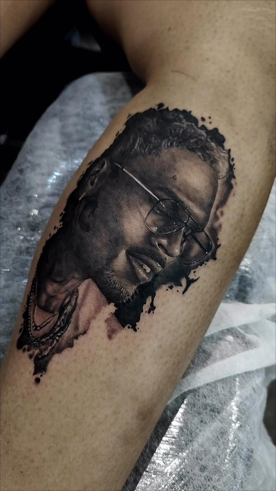

Especialidade
Realismo preto e cinza
É o que eu faço todos os dias, e a técnica que depende menos de truque e mais de paciência: contraste no lugar certo, cinza construído em camadas e preto fechado só onde a peça precisa de peso.
01 — A técnica
O que separa realismo de desenho escuro
Quem olha uma peça de realismo acha que o mérito está no detalhe. Não está: está no contraste. Uma tattoo com muito detalhe e pouca diferença entre o claro e o escuro vira uma mancha cinza a três metros de distância — e é a três metros que as pessoas vão ver a sua tatuagem.
Por isso o trabalho começa decidindo onde vai o preto mais fechado e onde a pele fica sem tinta nenhuma. A pele clara sem tinta é a luz da peça: ela não se recupera depois. Essa é a decisão que mais pesa no resultado, e ela acontece antes da primeira linha.
A outra metade é o tempo. Camada de cinza aplicada com pressa fecha e perde a transição; o cinza muito claro, feito em excesso, escurece com os anos e some dentro do cinza médio. É o tipo de erro que só aparece três anos depois — e é por isso que eu prefiro uma sessão a mais a uma camada apressada.
Peças
Peças em preto e cinza
Retrato, religioso e figura, em braço, antebraço e panturrilha.



O acervo completo fica no portfólio, e os trabalhos mais recentes saem primeiro no Instagram @andretatuadoor.
02 — A referência
A foto que serve
O que ajuda
- Luz lateral, que cria sombra e dá volume ao rosto
- Resolução suficiente para ampliar o olho sem embaçar
- Rosto nítido e de frente, ou de três quartos
- Uma foto só, escolhida, em vez de cinco parecidas
O que atrapalha
- Flash direto: apaga a sombra e achata o rosto
- Foto de tela, captura de vídeo ou imagem muito comprimida
- Filtro que já apagou a textura da pele
- Foto escura, em que não se enxerga o olho
Com foto ruim, o realismo vira interpretação — e aí a peça pode ficar bonita sem ficar parecida. Se a referência for a única que existe, me diga: às vezes o caminho é mudar o enquadramento do desenho em vez de insistir na foto.
Dúvidas
O que mais me perguntam
Realismo preto e cinza envelhece bem?
Envelhece bem quando tem contraste e tamanho suficiente para o detalhe que foi desenhado. O que derruba uma peça com o tempo é sol e detalhe pequeno demais para a área escolhida. Protetor solar depois de cicatrizado é o cuidado que mais preserva o cinza.
Tem tamanho mínimo?
Tem, e ele muda com o desenho. Um retrato precisa de espaço para o olho, a boca e a transição de sombra — reduzir demais apaga justamente o que faz o rosto ser reconhecível. Quando o tamanho que você quer não sustenta a referência, eu aviso antes, e proponho outro enquadramento.
Dá para fazer realismo colorido?
Dá, e eu faço. O foco da casa é preto e cinza, mas realismo colorido e aquarela também estão no repertório. Maori eu não faço: é um estilo de alta dificuldade, com repertório próprio, e prefiro indicar outro profissional a entregar um trabalho aproximado.
Como eu sei que o desenho vai ficar como eu imaginei?
Você vê o desenho antes da sessão, e ajusta. O stencil é aplicado na pele e conferido no espelho: posição, escala e fluxo são decididos com a peça já em você. O que não dá é redesenhar o projeto inteiro na cadeira.
Me conta a sua ideia
Manda a referência, a região do corpo e o tamanho que você imagina. Eu avalio o projeto e respondo pessoalmente.
Av. Melchert, 606 — Vila Matilde, São Paulo. Todos os dias, das 9h às 22h, somente com hora marcada. Atendimento para maiores de 18 anos.